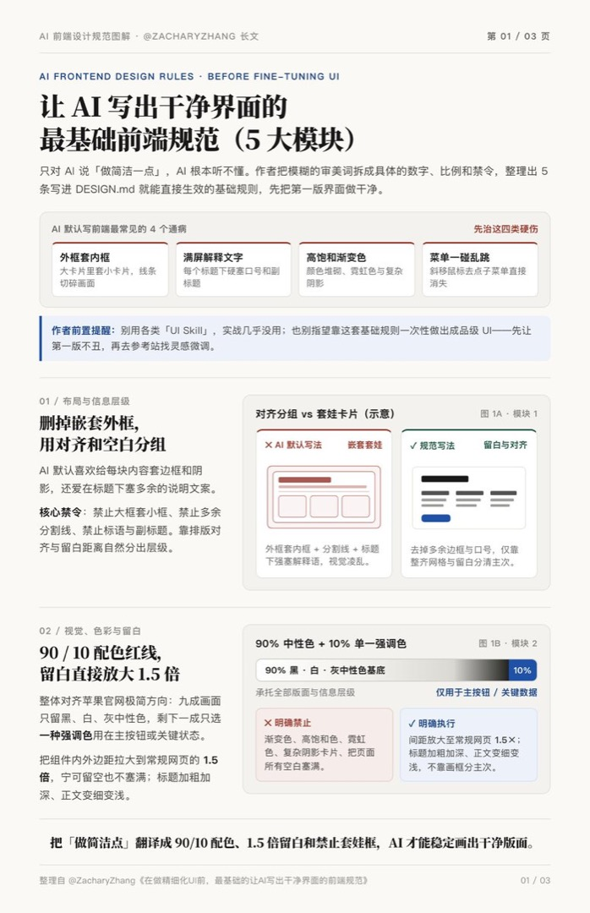
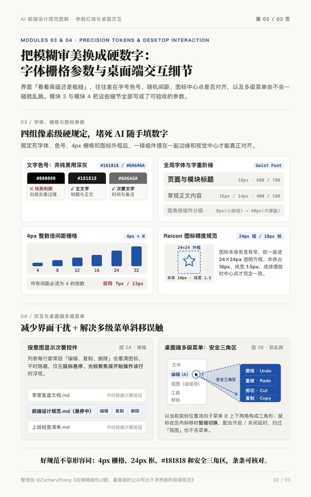
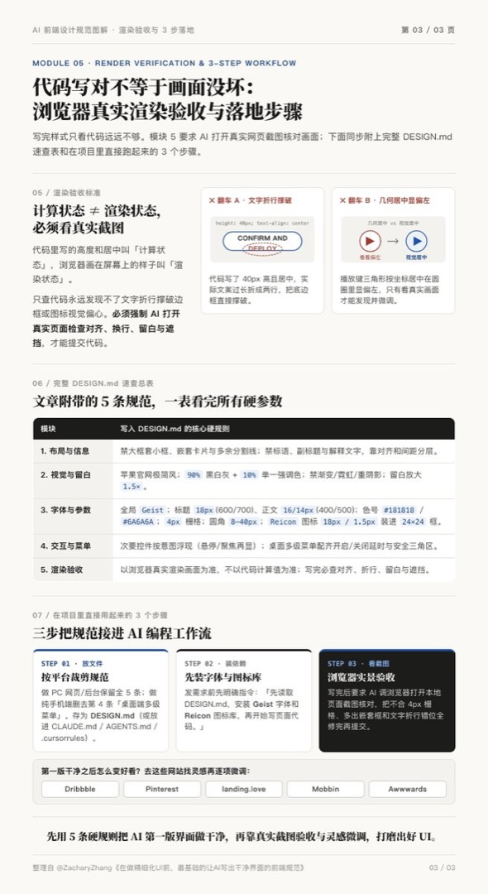
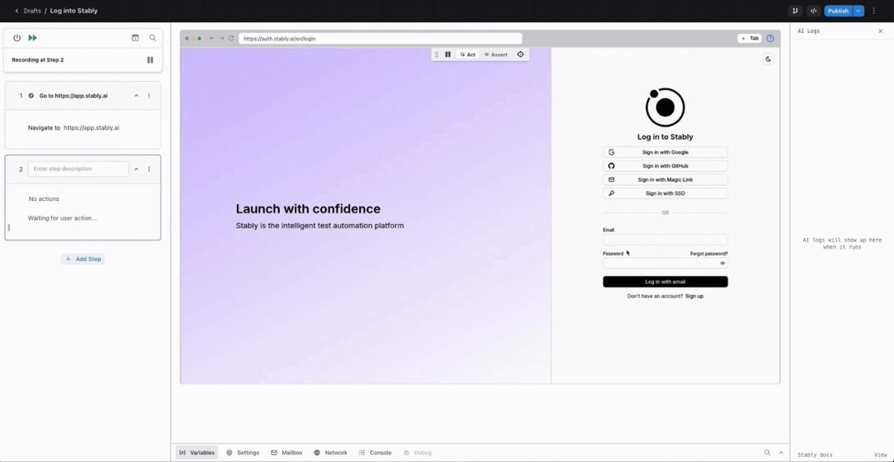
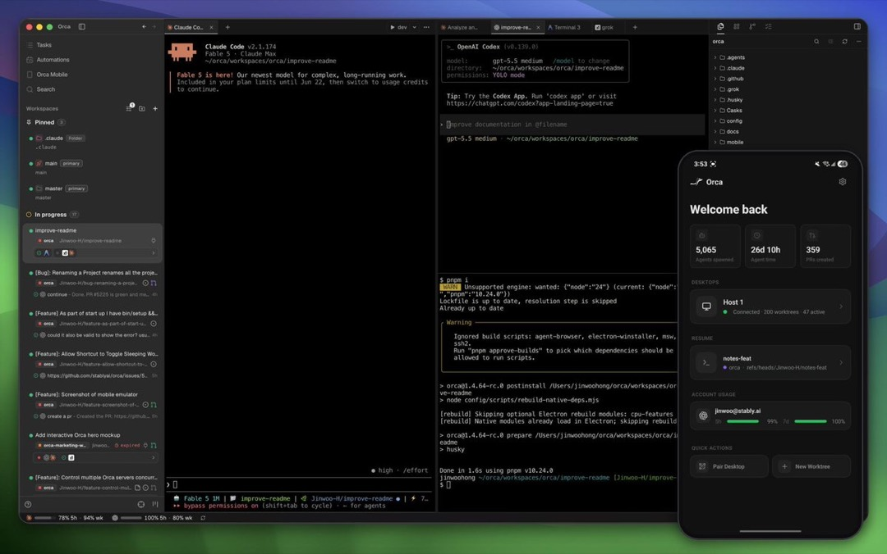
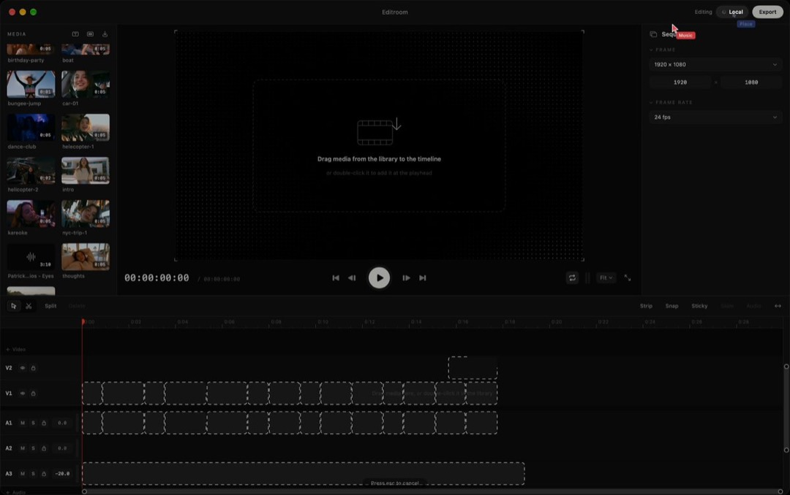
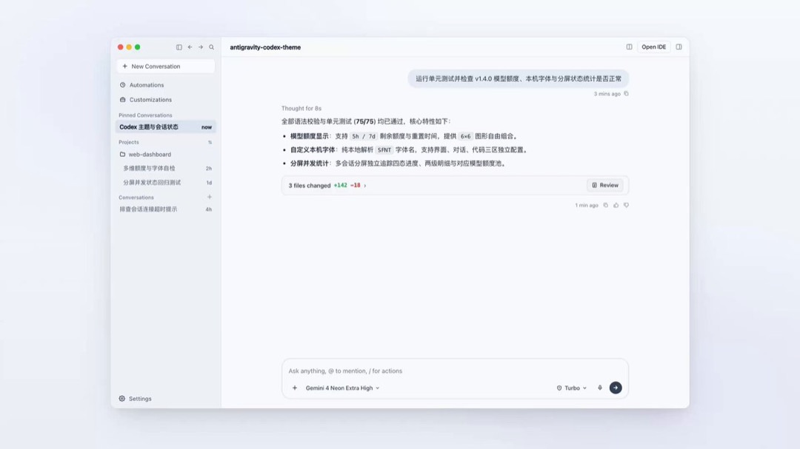
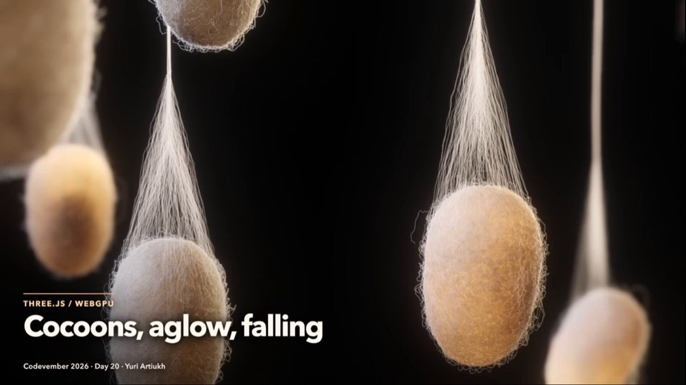

本期速览
01 前端界面设计规范：具体数值与禁令
03 AgenticPPL 用命令 token 衡量 Agent 能力
05 Orca 多 Agent 编排工具获近 140K Star
06 Hyper-Extract 用 LLM 提炼结构化知识图谱
09 Cocoon 用 WebGPU 神经渲染实时跑丝绸
01｜前端界面设计规范：具体数值与禁令
来源（X） · @double_burger_2 · 2026-11-27 00:42
# 前端界面设计规范
## 1. 布局与信息
- 禁止大框套小框，禁止嵌套卡片与多余分割线。
- 禁止标语、副标题、次级标签和解释性描述文字。
- 用排版对齐和间距区分内容层级，不靠文字解释界面。
## 2. 视觉、色彩与留白
- 整体参考苹果官网极简风格。
- 色彩比例：90% 面积使用黑、白、灰中性色；10% 面积使用单一强调色标出核心操作或关键数据。
- 禁止渐变色、高饱和色、霓虹色和复杂阴影卡片。
- 字重与明度对比：标题加粗加深，正文变细变浅。
- 放大留白：组件内边距与外边距设为常规页面的 1.5 倍，宁可留空也不塞满。
## 3. 字体、栅格与图标
- 字体：全局使用 Geist 字体。
- 字号与字重：标题 18px 并加粗（字重 600 或 700）；正文使用 16px 或 14px，字重取常规（400）或中等（500）。
- 文字颜色：主文字用 #181818，次要文字用 #6A6A6A。
- 间距栅格：所有间距取 4px 的整数倍，不留例外。
- 圆角：按组件尺寸与层级，在 8px 到 40px 之间取值（小按钮用小圆角，大弹窗用大圆角）。
- 图标：使用 Reicon 图标库（https://reicon.dev/docs）。图标本体 18px，线条粗细 1.5px，放在 24px × 24px 的透明外框内。
## 4. 交互与桌面端菜单
- 按意图显示控件：平时隐藏次要操作按钮；当用户鼠标悬停、光标聚焦、滚动靠近或开始操作该区域时再显示。
- 桌面端多级菜单：同时实现开启延时、关闭延时、安全三角区。当鼠标从父菜单 A 移向子菜单 B 时，以当前鼠标坐标和子菜单 B 的上下边缘端点连成三角形区域；鼠标处于该三角形内时，保持子菜单 B 打开，暂缓切换到途经的其他菜单项。
## 5. 渲染验收
- 以浏览器真实视觉渲染结果为准，不以代码计算属性值为准。写完代码必须检查真实画面中的对齐、换行、留白与遮挡。
引用内容
Leo @double_burger_2



02｜大厂蒸馏新策略：前沿模型审阅迭代
来源（X） · @xingzengji · 2026-11-26 09:02
1、用美国前沿模型针对某个提示词生成答案；
2、再用自己的模型对同一个提示词生成答案；
3、让美国前沿模型审阅自己模型的答案，找出问题并提出修正建议；
4、不断重复前三步，直至自己模型回答的质量接近美国模型。
《The Information》报道。
03｜AgenticPPL 用命令 token 衡量 Agent 能力
来源（X） · @dongxi_nlp · 2026-11-26 15:57
引用内容
Wenhao Chai @wenhaocha1
中文译文
感恩节博客：困惑度（关于什么的？）就是智能 🌟
正如OpenAI所说，困惑度就是智能，那么智能体轨迹上的困惑度能衡量智能体能力吗？
我们发现它不能。整条轨迹的困惑度在Terminal-Bench 2.1上对模型的排名是反的。
但在0.3%的字节上，困惑度能得到正确的排名，而这些正是智能体在读取终端后紧接着写下的命令token。
我们称之为AgenticPPL，灵感来自LongPPL。感恩节快乐！
博客：http://wenhaochai.com/blogs/agentic-ppl.html
原文
Thanksgiving Blog: Perplexity (on what?) is intelligence 🌟
perplexity is intelligence as OpenAI said, so does perplexity on agent trajectories measure agentic ability?
we found it does not. whole traj perplexity ranks models backwards on Terminal-Bench 2.1.
but on 0.3% of the bytes, perplexity gets the ranking right, and they're the command tokens an agent writes right after reading the terminal.
we call it AgenticPPL, inspired by LongPPL. happy thanksgiving!
Blog: http://wenhaochai.com/blogs/agentic-ppl.html

04｜Anthropic 推出 FDE 部署工程师路线课
来源（X） · @ryanhn717 · 2026-11-27 07:08
不只是讲 API、Claude Code、MCP 和 Agent Skills，后面专门拆了怎么把客户需求做成可验收的试点：开工前先定基线和成功标准、切第一批交付范围、带首批用户跑起来。
注意这套完整路线目前面向 Claude Partner Network 成员开放；里面部分基础课在 Claude Academy 能直接看。
路线页：https://anthropic-partners.skilljar.com/path/claude-fde
05｜Orca 多 Agent 编排工具获近 140K Star
来源（X） · @zujingpgg · 2026-11-26 14:39
有些技术积累，短期内看不出什么商业价值，换个赛道可能就成了竞争优势。
梁津晶（Jinjing Liang）曾是 Google Chrome 高级工程师，负责测试与发布基础设施；Neil Parker 曾是 Uber 的技术负责人。
因为自己的婚礼有不少亲友无法到场，两人在 2019 年创办了婚礼直播平台 Lovecast，并于 2022 年入选硅谷知名创业孵化器 Y Combinator（YC）的冬季创业营。
后来转型做 Stably AI，专攻软件开发里没人爱干的脏活累活：自动化测试，用自然语言生成和维护 Playwright 端到端测试脚本。
今年 3 月 17 日，Orca 的 GitHub 仓库创建。这个采用 MIT 协议开源的多 Agent 编排工具，短短 8 个多月就拿下了接近 140K Star。
现在 Orca 的 Design Mode，直接在内置浏览器里点选页面元素，就能把 DOM、CSS 和截图交给 Claude Code、Codex 等 Agent。
回头看，从 Google Chrome 的测试基础设施，到 Stably AI 的浏览器自动化，再到今天的 Orca，几段看似不同的经历，居然串到了一起。


06｜Hyper-Extract 用 LLM 提炼结构化知识图谱
来源（X） · @Huahuazo · 2026-11-27 05:05
Hyper-Extract 用的是 LLM 自动提炼，把文本转成结构化知识。
普通图谱、超图、时空图谱等结构，它大约支持 8 种；80 多个领域模板内置其中，金融、法律、医疗、中医全在覆盖范围内。增量演进不在话下，一键导出到 Obsidian 同样办得到。
文档丢进去，关联信息自己就抽出来了，大批文档的场景用它正对路。
🔗https://github.com/yifanfeng97/hyper-extract
07｜Editroom 开源 23MB 支持 4K 实时剪辑
来源（X） · @wquguru · 2026-11-26 23:40
对比之下 Premiere ~7GB、DaVinci Resolve ~6GB、iMovie ~4GB
editroom 由设计师 Robbie Tilton（曾参与 Apple Vision Pro 和 Google Glass 界面设计）开发：
1. 支持 4K 实时编辑，无需代理、无卡顿、无缓冲
2. 手动 + AI 双模式深度融合
3. 内置了强大的 AI 能力，支持用自然语言描述剪辑
4. 内置 MCP Server，Claude、ChatGPT/Codex 等智能体可以直接连接并操作当前打开的项目
5. 也支持完全本地 Apple 端侧模型
官网：https://robbietilton.com/editroom
开源地址：https://github.com/robbietilton/Editroom

08｜antigravity-codex-theme 新增额度常驻与分屏统计
来源（X） · @shehxuhxjx66088 · 2026-11-26 14:38
1.5h / 7d 模型额度常驻：不用再切页面猜还剩多少额度，侧栏和统计面板底部直接看百分比和具体重置时间，做了分段格、双环、仪表、20 点阵等 6×6 种克制墨色组合。
2.本机字体三区独立：纯本地扫描系统字体，UI 界面、AI 回复正文、代码块/代码审查可以各用各的字体，下拉直接预览字形，不会把图标刷成方块。
3.左右分屏独立统计：同时开两个会话跑 Gemini 和 Claude 时，速率、上下文占比和额度池各自独立，不再串台。
连同 Codex 纯白/炭灰昼夜主题、1,900+ 词条汉化、四态状态灯和 Ghost Text 下一句预测，全程不改安装包原文件，旧版用户在「设置 → Codex 主题」里点一下就能热重载升级。
仓库：https://github.com/nkjDSLcvanv/antigravity-codex-theme

09｜Cocoon 用 WebGPU 神经渲染实时跑丝绸
来源（X） · @sundyme · 2026-11-27 10:00
扒了一下作者 @akella 的技术揭秘，它甚至不只是传统 Three.js（Three.js 只管相机控制），真正让它逼真到像离线电影渲染的，是一套极客到离谱的 WebGPU + 神经渲染（Neural PRT） 方案：
🧵 真正的“丝级”几何体 每颗蚕茧都有 87,260 根真实 3D 样条曲线（138 万个控制点），分缠绕丝、蓬松环、短绒毛、长游丝 4 层——视频后半段我把 parts 一层层关掉剥到裸壳再装回去，全是实打实的几何。
🧠 把 Blender 路径追踪压进 72 KB 神经网络 丝绸最难算的是光线在数万根细丝里的多重散射。作者先在 RTX 5080 上用 Blender Cycles 离线跑了 1,400 张路径追踪图，再训练出一个 3 层、仅 72 KB 的小神经网络学会光影传输。
⚡ 两个离谱的 WebGPU 加速技巧 • 把 72 KB 权重直接写成 WGSL Shader 里的硬编码字面量，不走显存 Buffer 读取，推理直接快 40 倍 • 每帧把所有光源预先乘进网络最后一层——3 盏灯和 100 盏灯开销完全一样 • Compute Shader 只在控制点算光（解耦着色），不逐像素算，加上错帧重算，M1 Max 上一帧只要 12.3 ms
整套资产压缩完只下载 5.9 MB，甚至悬丝断裂都是用 Web Worker 实时跑物理模型算出来的。
这大概就是下一代 Web 实时图形学的样子。

引用内容
akella @akella
中文译文
Codevember 2026 / 20 / Cocoon
https://akella.github.io/codevember-2026/20/
使用神经预计算辐射传输，灵感来自@onirenaud的实验。我可能用了太多几何体😅，向你的GPU道歉！
#threejs
原文
Codevember 2026 / 20 / Cocoon
https://akella.github.io/codevember-2026/20/
Using neural precomputed radiance transfer, inspired by @onirenaud experiments. I might've used too much geometry 😅, apologies to your gpu!
#threejs